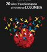

Nuestros Beneficiarios
“Todo el que tenga oportunidad debería hacerlo”
El libro Tio Vaina de Francisco Barrios, beneficiario COLFUTURO 1997, fue seleccionado entre 147 obras como la obra ganadora del Premio Nacional de Cuento ciudad de Bogotá 2011, que otorga el Instituto Distrital de Artes de Bogotá.
Conózca su testimonio...“Una forma más de
crecer
en la
vida”
El libro Tio Vaina de Nicolai Jiménez, beneficiario COLFUTURO 2009, fue seleccionado entre 147 obras como la obra ganadora del Premio Nacional de Cuento ciudad de Bogotá 2011, que otorga el Instituto Distrital de Artes de Bogotá.
Conózca su testimonio...“Retribuirle a Colombia antes que nada”
El libro Tio Vaina de Natalia Barón, beneficiaria COLFUTURO 2010, fue seleccionado entre 147 obras como la obra ganadora del Premio Nacional de Cuento ciudad de Bogotá 2011, que otorga el Instituto Distrital de Artes de Bogotá.
Conózca su testimonio...PREMIOS Y DISTINCIONES
- Fuente: COLFUTURO
- |
- Publicado: Noviembre 15 de 2012
- |
- Beneficiarios
El Consejo Latinoamericano de Ciencias Sociales (CLACSO), institución con más de 322 centros de investigación en América Latina y el Caribe, Europa y Estados Unidos, seleccionó la propuesta de Daniel Munevar entre 47 que se presentaron en la convocatoria anual de becas para la investigación regional.
- Fuente: COLFUTURO
- |
- Publicado: Noviembre 15 de 2012
- |
- Beneficiarios
El proyecto Ape, abeja en italiano, de la colombiana Catalina Calderón, fue seleccionado como uno de los tres ganadores del concurso nacional de diseño organizado por las empresas italianas Konta-minazione e Industrie Grafiche Servi SpA, con el apoyo del municipio de la ciudad de Busto Arsizio. El concurso premió al mejor diseño de exhibidor de piso destinado al sector farmacéutico o cosmético.
TESTIMONIOS
“Es cuestión de contar una buena buena historia”
“La ayuda que me brindó COLFUTURO fue indispensable en el proceso que lleve acabo para realizar mis posgrado en Alemania. Estuvieron conmigo incondicionalmente de comienzo a fin.” - Juan José Salazar
“Tuve mis sueños de hacerlo a nivel internacional...”
“La ayuda que me brindó COLFUTURO fue indispensable en el proceso que lleve acabo para realizar mis posgrado en Alemania. Estuvieron conmigo incondicionalmente de comienzo a fin.” - Gerardo Tunubalá
VIDEOS
Beneficiarios Colfuturo en Google Bogotá
Tres beneficiarios de Colfuturo fueron elegidos, luego de un riguroso proceso de selección, para conformar el equipo de Google Bogotá.
Tésis y artículos
Tesis, artículos académicos y científicos en todas las áreas de estudio, publicadas por los beneficiarios de COLFUTURO.
Consulte las publicaciones...
Red de beneficiarios
 Consulte la red de beneficiarios de COLFUTURO en Linked In y revise los perfiles de los mejores profesionales de Colombia.
Consulte la red de beneficiarios de COLFUTURO en Linked In y revise los perfiles de los mejores profesionales de Colombia.
Busque los mejores perfiles...
Directorio
COLFUTURO cuenta con un directorio de beneficiarios seleccionados desde 1992 hasta la fecha.
Conozca los beneficiarios de cada año...
ANUARIO DE BENEFICIARIOS
COLFUTURO publica un anuario de los beneficiarios que han sido seleccionados en la convocatoria de cada año.
Anuario 2012
Descargue el PDF...
Versión online...
Anuario 2011
Descargue el PDF...
Versión online...
Anuario 2010
Descargue el PDF...
Versión online...
Anuario 2009
Descargue el PDF...
Versión online...
Anuario 2008
Descargue el PDF...
Versión online...